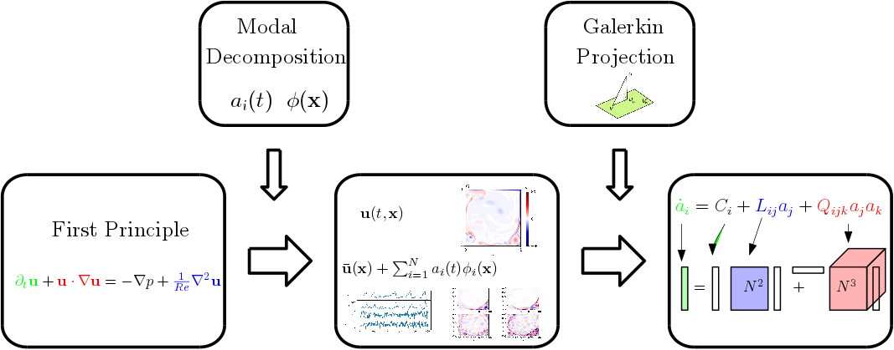
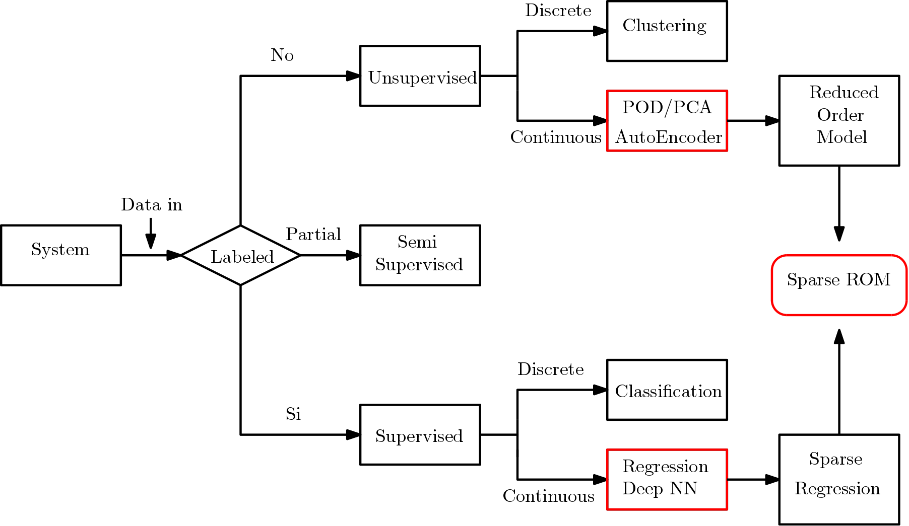

The main purpose of this page is to give a first glimpse on the thematic I am tackling in my PhD project... This is still an ongoing research so the page is not complete. New contents will be uploaded soon! Stay tuned!
Motivation
Although Reduced Order Modelling has been successful in many appications concerning analysis and flow control one of the main limitation is still the high computational cost associated with the nonlinear term. The main objective is to develop a systematic data-driven methodology to construct sparsely-connected models of turbulent flows, capturing the underlying sparsity in the structure of energy interactions between scales.
Main Idea
Reduced Order Modelling
Decomposing the flow field in temporal and spatial shapes and then describe their evolution.
The main problem arises from the non linear nature of the governing equations every mode interacts with all the others in a non trivial way.
We would like to leverage the capabilities of the machine learning to learn from data which terms of the model are relevant for the dynamics of the system.
Methodology
It is known that the energy transfer inside a turbulent flows occours according preferential patterns. Therefore not all triadic interaction inside the tensor Q_{ijk} have the same importance. The dynamics of a certain scale depend predominantly upon the dynamics of a subset of the set of scales and the complemetary set of structures can be generally neglected with minor global effects
Two dymensional turbulence
We applyed this methodology to the unsteady flow developing inside a lid driven cavity at Re = 20.000